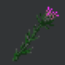

Items
Thistle Mace
10 Nature Gems
N2 forging
+1 Nature Booster
Waddup boi
Clam

5 Water Gems, 5 Nature Gems.
W1N1 Forging.
Provides 2 temporary Astral Pearls. You should have at the very least 1 of these in every Soothsayer-depending army.
There are a few combat spells requiring Astral Pearls a Sauromatian player should be often casting in every pitched battle.
These are Light of the Northern Star and Power of the Spheres, followed by Will of the Fates, and finally Antimagic and Doom.
Skull Staff
10 Death Gems.
D2 Forging
+1 Death Booster
I tend to give these to battle caster Witch Kings
Trying to either achieve the high level D spells, or lowering casting cost enough to cast multiple important spells.
Giving Skull Staves to Enaris tends not to help very much; either by hurting Comm fatigue distribution, or being a waste of Dgems.
Crystal Coin

placeholder
Moonvine Bracelet

15 Nature Gems, 5 Astral Pearls.
N3S1 Forging
+1 N Booster
To make these requires an Enari with both Armor of Twisting Thorns and Thistle maces.
They have rather high costs, so use these to reach high N rituals or make use of N scaling rituals like Summon Lamias.
Starshine Skullcap

placeholder
Skullface

placeholder
Black Bow of Botulf

placeholder
Armor of Twisting Thorns

placeholder
Ring of Sorcery

placeholder
Ring of Wizardry

placeholder
Black Book of Secrets

placeholder
Tome of Gaia

placeholder
Sceptre of Dark Regency

placeholder
The Sword of Aurgelmer

placeholder
Amulet of Antimagic

placeholder
Ring of Regeneration

placeholder
Vine Shield

placeholder
Frost Brand

placeholder